Scoring von 38 didaktischen Ebenen – der Plan
Ich mache direkt dort weiter, wo meine erste Zwischenetappe endete: Die «grosse Liste» ist fertig. Über mehrere Runden sammelte und konsolidierte ich eine «Global List», die am Schluss 38 didaktische Ebenen in 6 Clustern umfasst. Dazu kommen Tags und vier Querschnittsdimensionen: Digitalität, Ethik & Verantwortung, Agilität & Experimentierfreude und kritische Reflexion. Die vollständige Liste gehört nicht hierher. Sie ist der Wald. In dieser Note interessiert mich der nächste Schritt: Welche wenigen Ebenen schaffen es in die kleine Liste, und warum?
Weil die grosse Liste zu viel für den Schulalltag ist und von Anfang an nur als erster Teilschritt gedacht war. Ich will die didaktischen Ebenen nutzen, um in meinem Unterricht Aufgaben oder Lernumgebungen zu differenzieren. Dazu brauche ich keinen Wald von 38 didaktischen Ebenen, sondern eine kleine Auswahl von zirka sechs bis zehn didaktischen Ebenen.
Und diese Reduktion will ich jetzt umsetzen: Ich treffe aus der grossen Liste eine Auswahl, um daraus eine «kleine Liste», die «LOCAL LIST», zu erstellen. Diese soll mein Arbeitswerkzeug für den Schulalltag werden: didaktische Ebenen nicht als starre Ein-Aus-Knöpfe, sondern als Drehregler. Ich schildere GPT kurz mein Ziel:
Du:
Top 6-9 Ebenen werden «Local List 1.1». Stellschrauben. 1-2 Beispiele pro Stellschrauben (ankern die Erwartung). Für jede ausgewählte Ebene eine klare «Drehskala». Das heisst 2-3
Aber kann man überhaupt eine didaktische Ebene beurteilen? Ich suche nach Kriterien und ich finde keine wissenschaftliche Grundlage zum Beispiel für die Promptbarkeit von didaktischen Ebenen und so leiten mich Kernfragen zur Praxis und Empfehlungen von GPT: Wie stark ist der Wirkhebel beim Lernen? Wie gut lässt sich die Ebene beobachten oder fächerübergreifend nutzen? Vor allem: Wie zuverlässig lässt sie sich in KI-Prompts übersetzen? Es ist die Vorbereitung für ein Scoring-Verfahren, das ich nachher GPT übergeben und durchführen lassen will. Ich plane, GPT baut, er führt durch und schlägt vor – ich überprüfe und validiere. Jede didaktische Ebene soll nach diesen gewichteten Kriterien bewertet werden.
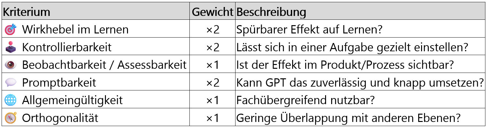
Es ist eine mehr oder weniger vollständig durch GPT erstellte Tabelle und arbeitet mit sechs Kriterien, einer 0–2-Skala und Gewichtungen. Er soll jede didaktische Ebene entlang dieser Kriterien beurteilen, die Summe bilden und nach Score sortieren. Wichtig ist mir dabei: Gescoret werden nur die didaktischen Ebenen. Die Querschnittsdimensionen werden nicht ausgewählt und nicht bewertet. Sie bleiben als Prüfraster mitgeführt. Die 6–9 Ebenen mit hohem Score, geringer Redundanz und breiter Anwendbarkeit sollen meine kleine Liste, meine «Local List», bilden. Danach will ich für jede ausgewählte Ebene 2–3 Stellschrauben mit je 1–2 Anker-Beispielen. Diese will ich dann im Unterricht bzw. in GPT-Prompts einsetzen. Soweit der Plan.
Scoring-List
Ich lasse GPT die 38 didaktischen Ebenen anhand der sechs Kriterien einschätzen, die gewichteten Werte addieren und als Übersicht darstellen.
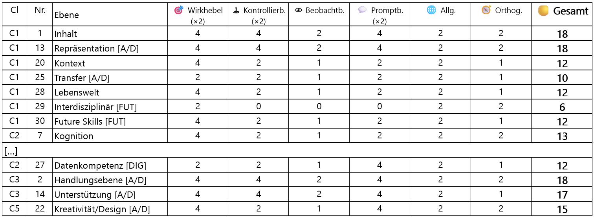
Die Tags bleiben in der Tabelle sichtbar. [DIG] markiert Ebenen mit Digitalitätsbezug, [A/D] markiert Ebenen, die analog und digital einsetzbar sind, und [FUT] markiert Zukunfts- und Future-Skills-Bezüge. Diese Tags sind keine zusätzlichen Punkte im Scoring. Sie helfen mir nur, beim Lesen der Liste zu sehen, welche Ebenen besondere Bezüge tragen.
Wiederum gibt es eine unübersichtliche Mammut-Tabelle, die ich in Excel verkleinern muss, um sie überhaupt als Ganzes sehen zu können. Ich nehme die Tabelle nicht als mathematische Wahrheit oder als objektive Rangliste didaktischer Qualität und es geht auch nicht darum, die «beste» didaktische Ebene zu finden. Es geht einfach darum, mit Hilfe einem Arbeitsinstrument, die für mich möglicherweise am besten geeigneten didaktischen Ebenen zu finden. Ich sichte die Scoring-Tabelle und prüfe die Ebenen kurz: kein No Go. Ich fahre weiter und sortiere die Tabelle nach Gesamtpunktzahl.
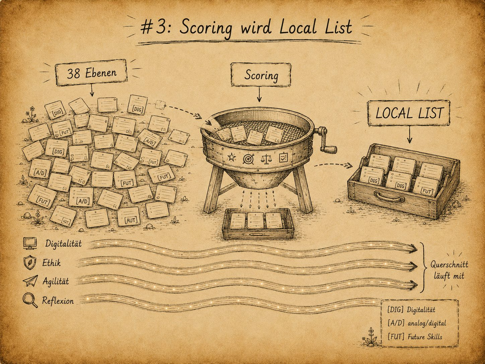
Local-List
Ich betrachte die Gesamtliste und fokussiere mich auf die obenliegenden Ebenen. Nachher nehme ich die didaktischen Ebenen mit der Maximalpunktzahl von 18 plus die beiden mit 17 und 16 Punkten auf meine «kleine Liste». Die drei didaktischen Ebenen mit 15 Punkten behalte ich als Reserve in der Rückhand. So erhalte ich eine «8 + 3 Liste».
Ich kopiere mir die 11 didaktischen Ebenen in eine neue Tabelle und schaue mir sie an. So sieht sie also aus, denke ich. Mir fällt auf, dass die Ebenen die Cluster nicht gleichmässig abdecken: Cluster 2 liegt in Reserve und Cluster 6 fehlt gänzlich. Dann sehe ich neben «MEDIEN» auch «MEDIENKRITIK». Ich überlege mir kurz, ob ich etwas anpassen soll, gehe aber weiter, da ich das später auch noch machen kann.
Ich habe nun meine ganz persönliche Arbeitsliste - für mein Schulzimmer, meinen Unterricht und ein Ziel: meine Schüler besser unterstützen zu können.
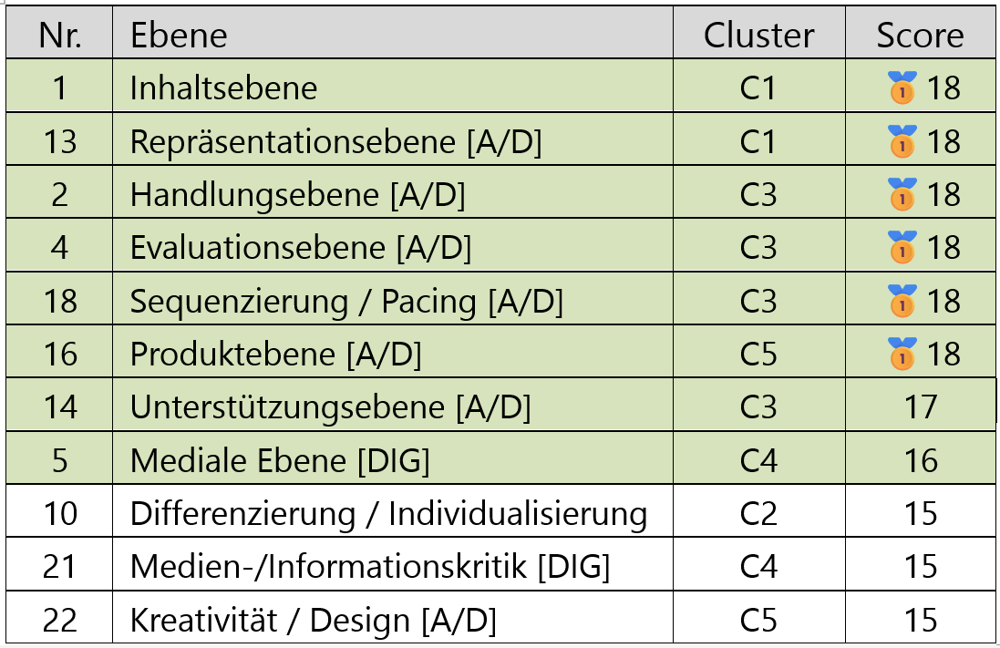
Hinweis: Diese vier Querschnittsdimensionen werden nicht gescort. Sie bleiben als Prüfraster neben der ausgewählten Local List erhalten.
Neben der Local List führe ich die vier Querschnittsdimensionen weiter mit: Digitalität, Ethik & Verantwortung, Agilität & Experimentierfreude und kritische Reflexion. Sie stehen nicht in Konkurrenz zur Local List. Die Local List zeigt, an welchen didaktischen Ebenen ich konkret arbeiten kann. Die Querschnittsdimensionen zeigen, welche Fragen ich beim Arbeiten an diesen Ebenen nicht vergessen darf.
Ich arbeite parallel zu diesem Chat in MISTRAL an einer zweiten Local List. Sie ist ähnlich und umfasst acht Ebenen, aber einer etwas anderen Gewichtung bei den Clustern. Ich lasse sie stehen, denn ich will mit der GPT-Version weiterfahren.
Stellschrauben für die Local List
Ich schaue mir die didaktischen Ebenen «Inhalts», «Repräsentation» und «Differenzierung» an und überlege, welche Stellschrauben die einzelnen Ebenen haben könnten? Was passiert, wenn ich «an diesen drehe»? Nach links – nach rechts. Wie kann ich sie mit einer KI einsetzen? Und so signalisiere ich GPT, dass es weiter geht….
Du:
Ja, nächster Schritt: Tabelle mit den Stellschrauben und den Beispielen.
Dies sind die ersten Zeilen meiner Stellschrauben-Tabelle:
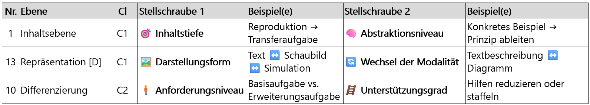
Ab hier wird das Wort Stellschraube konkret. Eine didaktische Ebene ist für mich das Feld, an dem ich drehen kann. Eine Stellschraube ist die konkrete Veränderung innerhalb dieses Feldes: mehr oder weniger Unterstützung, eine andere Darstellungsform, ein anderes Produkt, eine andere Sozialform. Ich suche also nicht die perfekte Aufgabe, sondern Stellen, an denen ich eine Aufgabe gezielt verändern kann.
Und was habe ich nun? Ich habe ein Instrument, mit dem ich eine Planung, eine Lernumgebung oder eine einzelne Aufgabe gezielt verändern kann. Ich kann eine Ebene direkt über die «Stellschrauben» steuern. Ich muss nur noch lernen, wie ich das mit GPT gezielt prompten kann, und nachher will ich die Wirkung im Unterricht beobachten und messen.
Der erste Anwendungstest: Stellschrauben für ein Aufgabenset
Ich habe eine Stellschrauben-Tabelle zu 11 didaktischen Ebenen erstellt und will diese für das aktuelle Thema «Unsere Erde» testen. Kann ich eine einzelne Aufgabe oder ein Aufgabenset verändern? Ich bitte GPT, die Perspektive einer Oberstufenlehrperson einzunehmen und zu beurteilen, welche Ebenen und Stellschrauben sich für einen Aufgabenprompt zum RZG-Thema «Unsere Erde» eignen. Und seine Antwort darauf finde ich irgendwie spannend.
ChatGPT:
Ich antworte so, als wäre ich wirklich Lehrer einer 2. Sek (13-jährige) im Jahr 2024 - mit GPT als Assistent zur Erstellung eines Aufgabensets für das Fach RZG (Räume, Zeiten, Gesellschaften), Thema «Unsere Erde».
Nicht, weil er etwas Spannendes gemacht hat, sondern weil mir erst nach der Antwort bewusst wurde, dass ich gerade eine KI beauftragt habe, eine KI als «Assistenten» zu nehmen. Ein kurzer Gedanke in meinem Kopf – nichts Weltbewegendes - und weiter geht’s.
Seine Antwort auf den Perspektivenwechsel ist kurz, knapp und klar:
OUTPUT:
ChatGPT:
Die Lernwirksamkeit bei 13-Jährigen sicherstellen (hohen Wirkhebel),
müssen didaktisch kontrollierbar und beobachtbar sein,
in GPT-Prompts übersetzbar bleiben.
Ich lese die drei Punkte und denke: «Einmal Ebene Schüler, einmal Lehrperson und einmal Ebene Technik AI. Smart.» Weniger Smart finde ich seinen nächsten Output zu «Ausgewählte Ebenen (Top-Einstiegspaket für GPT-Prompts)» mit dem Symbol 🔝:
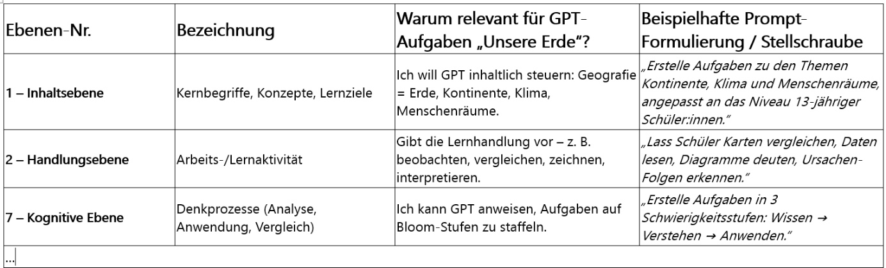
Er präsentiert zehn didaktische Ebenen aus der ursprünglichen GLOBAL List. Darunter sind auch solche, die gar nicht auf der kleinen Liste stehen. Dazu kommt ein Aufgaben-Prompt mit traditionell-linearem Aufbau:
CODE:
ChatGPT:
Prompt-Gerüst:
Du bist Unterrichtsassistent für eine 2. Sek (13-jährige).
Thema: Unsere Erde – Aufbau, Kontinente, Klima, Menschenräume.
Erstelle ein Aufgabenset (6–8 Aufgaben) mit folgender Struktur:
Einstieg – Motivation & Vorwissen aktivieren (C1-Inhalt + C3-Handlung + Sequenzierung).
Erarbeitung – Karten lesen, Daten deuten, Zusammenhänge erklären (kognitiv).
…
Und am Schluss folgt eine Begründung seiner Ebenen-Auswahl und einem Fazit:
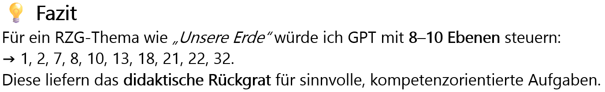
Dieser Output ist ein Warnsignal. Generische Formulierungen wie «würde ich» oder Schlagwörter wie «didaktisches Rückgrat» sind für mich Anzeichen, dass der Chat seinem Ende entgegen geht. GPT ist nicht mehr bei der Sache. Ich könnte weiterfahren oder meiner Intuition vertrauen, dass dieser Chat gestorben ist. Auf schlechte Antworten werden weitere schlechte Antworten folgen. Ich weiss noch nicht, warum das passiert und was Ursache und mögliche Lösung sein könnte. Schreibe ich etwas Falsches?
Ich schliesse den Chat und starte eine neue Unterhaltung. Ich rege mich ein bisschen auf, weil es immer auch bedeutet, den Faden im neuen Chat wieder neu aufzunehmen.
Neuer Versuch
Nach drei Turns kann ich dort weiterfahren, wo ich aufgehört habe. Und kann nachhaken:
Du:
Und Zusammenarbeitsformen? Partizipation? Community Learning?
Selbstverständlich hat GPT den Output schneller erstellt als ich den Prompt schreiben konnte und es überrascht mich auch nicht, dass er bereits eine neue Tabelle mit den sechs relevanten Ebenen für Zusammenarbeit und Partizipation aus der ganz grossen Liste der 38 didaktischen Ebenen erstellt hat. Schon wieder bin ich auf dem sicheren Weg zum Overload.
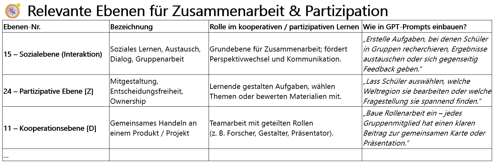
Acht plus drei Ebenen habe ich und nun schlägt GPT sechs neue "relevante Ebenen" vor. Er kommt mir langsam vor wie eine Bildungsbehörde, die auch immer wieder etwas "Relevantes" zu Schulbeginn oben drauf packt. Im Gegensatz zu den Schulbehörden gefallen mir aber manchmal die Vorschläge von der KI besser und ich muss neidlos seine Überlegenheit in diesem Bereich anerkennen. GPT kann Wissen schnell ordnen, kombinieren und wirklich gut präsentieren. Auch hier wieder:
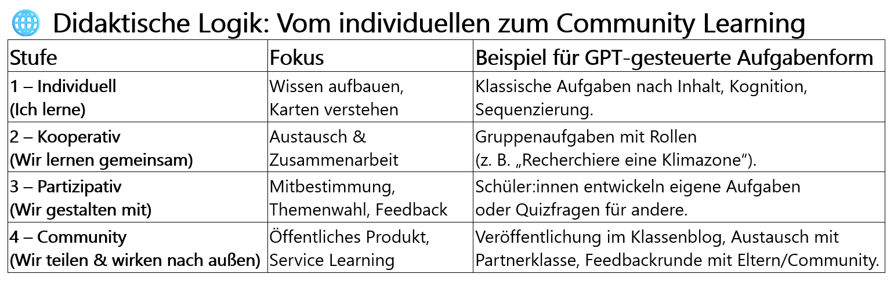
Die Übersicht ist einfach schön und stimmig. Ich analysiere sie und versuche gedanklich herauszufinden, welches theoretische Modell dahinter stecken könnte. ICAP von Chi & Wylie? Vielleicht. Auf jeden Fall könnte ich mir sehr gut vorstellen, diese Übersicht in einem Aufgaben-Generator einzubauen.
HEUREKA
Und dann kommt der ganz normale Abschluss einer Chat-Runde: das Fazit und ein einzelnes Wort reicht, um in mir etwas auszulösen. Es sind diese seltenen und wirklich schönen Momente.
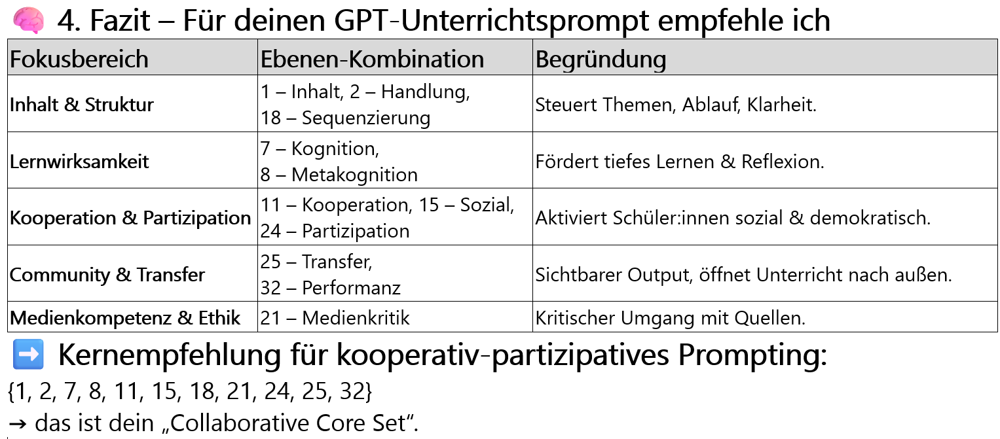
Das letzte Wort «Set» von GPTs Antwort ist es. Es sind nur drei Buchstaben, und die Bedeutung des Begriffs ist mir sehr wohl bekannt. Aber ich merke, wie mein Gehirn beginnt zu feuern. Der Briefträger in meinem Kopf kann die Information nicht zustellen. Nicht, weil er die richtige Schublade nicht findet und ich deshalb den letzten Satz mehrmals noch einmal lesen muss, sondern weil es (noch) gar keine Schublade für die neue Bedeutung des Begriffs gibt. HEUREKA ist vielleicht ein zu grosses Wort aber der Moment ist echt. Nicht weil die KI eine Wahrheit oder fertige Lösung liefert, sondern weil sie mir eine Tür zu einem neuen Denkweg zeigt.
Ich denke nicht,
dass sich GPT dessen bewusst ist.
Vielleicht gibt es eine ähnliche Idee bereits irgendwo auf der Welt und ob sie in den Trainingsdaten von OpenAI enthalten ist, kann ich nicht wissen. Das Wort «Set» ist die statistisch plausible Fortsetzung des bisherigen Textes und für GPT ist es schlicht das naheliegendste. Ich danke ihm dafür.
Ich lese die letzte Zeile mit «→ das ist dein Collaborative Set» noch einmal durch und es kommt mir jeweils wie ein Funkspruch von Major Tom vor:
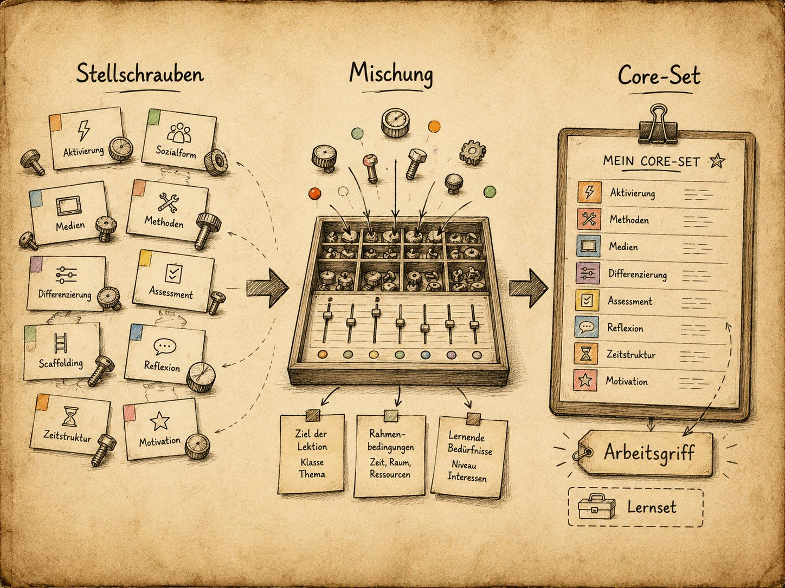
Damit verändert sich auch mein Verständnis der Core-Sets. Ein Core-Set besteht nicht nur aus mehreren ausgewählten Ebenen. Es muss zusätzlich durch die Querschnittsdimensionen lesbar bleiben. Wenn ich zum Beispiel ein Core-Set für Zusammenarbeit, Produktarbeit oder exploratives Lernen baue, frage ich nicht nur: Welche Ebenen kombiniere ich? Ich frage auch: Wo steckt Digitalität? Wo entstehen ethische Fragen? Wie viel Agilität lasse ich zu? Und wo braucht es kritische Reflexion?
Core-Sets als didaktische Mischungen
Mit dem Begriff «Collaborative Core Set» bringt GPT ein Label und ich erkenne darin eine brauchbare Schablone. Ein Set ist nicht nur einfach eine Auswahl, sondern eine wiederverwendbare Schablone. Ich denke: «Wenn ich die Cluster als Gruppen didaktischer Ebenen nicht einfach als organisatorische Sortierbehälter sehe, sondern als thematische Gewürzgläser, dann sollte es auch möglich sein, für verschiedene Situationen solche Sets als angepasste didaktische Settings zu erstellen. Es sind quasi neue Mischungen, die man mixen könnte. Kombinationen von Ebenen aus verschiedenen Clustern, die für spezifische Lernszenarien als Core-Sets optimiert sind. Und zwar nicht starr als Rezept aus einem Buch, sondern als Entwurfshilfe.
Und mit Hilfe von KI könnte ich … - ich höre auf zu schreiben. Ein neuer Gesprächsabschnitt mit GPT beginnt, bei dem wir über KI-gestützte Didaktik diskutieren und wie sie und Learning Analytics solche Core-Sets eines Tages dynamisch anpassen könnten. Das ist spannend, und Zukunftsmusik. Es ist das Jahr 2025 und zuerst will ich verstehen, ob einfache, vorbereitete Core-Sets bei mir im Schulzimmer überhaupt funktionieren.
Noch bin ich nicht soweit und mein nächstes Ziel ist es, einige vorgefertigte, handlungsleitende Core-Sets auf meinem PC zu haben. Ich nenne sie für mich einmal «didaktische Schablonen» für Prompts. Ich bin eine Oberstufenlehrperson und ich sehe Chancen in diesen Schablonen. Ich habe eine begrenzte Zeit, ein limitiertes Wissen und sehe eine Notwendigkeit, konstruktiv mit der Klassenheterogenität umzugehen. Ich werde nicht mehr nur die eingestellte Stellschraube einer vorgegebenen Aufgabe verändern. Nicht einfach: schwieriger, leichter, offener, enger, mehr Unterstützung, weniger Unterstützung. Das kenne ich. Neu ist für mich, dass ich die Stellschrauben nicht mehr einzeln sehe. Ich kann mehrere didaktische Ebenen bewusst miteinander verbinden: Inhalt, Repräsentation, Handlung, Soziales, Produkt, Kreativität, Digitalität. Daraus entsteht nicht einfach eine bessere Aufgabe, sondern eine kleine didaktische Schablone. Das ist der Unterschied: Früher passte ich eine vorhandene Aufgabe an. Jetzt entwerfe ich zuerst eine didaktische Mischung und lasse mir danach passende Aufgaben, Varianten oder Prüfungen dazu bauen. Die KI ersetzt dabei nicht meine Entscheidung. Sie hilft mir aber, meine Entscheidungen sichtbarer und wiederholbarer zu machen. Und wenn ich genauer sehen kann, an welchen Stellen ich überhaupt drehe, dann kann ich als Profi und Experte besser für die Jugendlichen da sein.
Ganz kurz denke ich an die andere Seite und überlege mir, was ich mit solchen Schablonen noch machen könnte? Ein Template als Kontroll- und Steuerungsinstrument im Schulzimmer? Ich verdränge diesen Gedanken und ziehe weiter.
Nach mehreren Runden definiere ich das «Core-Set» als eine Auswahl von Didaktischen Ebenen, die jeweils eine pädagogische Funktion erfüllen. GPT schlägt «strukturieren», «aktivieren», «differenzieren», «reflektieren» und weitere vor. Ich entscheide, dass ich mir drei bis vier solcher Sets zurechtlegen werde. Das wird didaktisches Prompting mit KI.
Und nachher erstelle ich mein allererstes Core-Set. Es heisst «Exploratives Lernset». Warum? Weil ich mich gerade spontan an die anfangs Nullerjahre und die Zeit des «aktiv-entdeckenden-Lernens» und «Mathe 2000» erinnere. Es sind positive Gefühle damit verbunden. Deshalb sage ich: «Lass uns das einmal ausprobieren!»
Der Vorschlag von GPT sieht dann so aus:
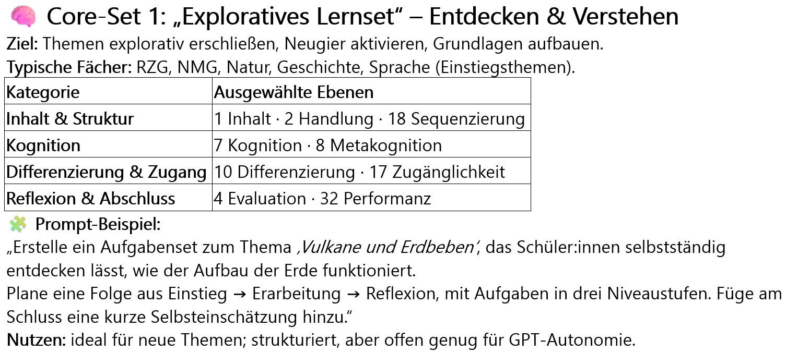
Das Ergebnis wirkt auf mich roh und an mehreren Stellen unfertig, aber das macht nichts. Ich erstelle weitere Sets wie «Collaborative Core Set» oder «Kompetenzorientiertes Lernset» und verwerfe andere Fancy-Sets wieder. Es sind keine neuen Begriffe, aber ich will beobachten, welche davon als Arbeitsgriffe taugen. Mit diesen Core-Sets könnte ich nicht nur didaktisch begründete Aufgaben erstellen, sondern umgekehrt auch vorhandene Aufgaben auf ihre didaktische Passung hin untersuchen. GPT erstellt, ich prüfe didaktisch und passe an.
Nun sind Stunden vergangen seit dem Major Tom-Moment und ich erinnere mich an den Moment zurück, als ich dachte: «I like.». Und noch immer denke ich: «Danke für den Hinweis!»
Matrix Ebenen × Core-Sets
Ein paar Tage später fahre ich weiter und beschäftige mich mit den beiden Ordnungsprinzipien; den didaktischen Ebenen aus der Local List und den Core-Sets.
Ich lasse eine Übersicht erstellen – eine Zuordnung der Ebenen zu den vier Core-Sets.
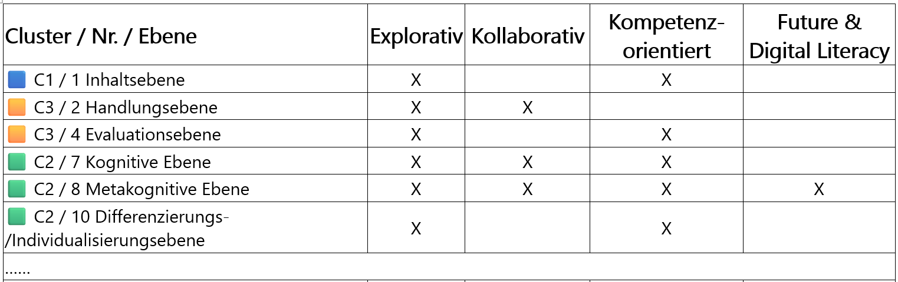
Ich stelle mir die Frage, was eigentlich passiert, wenn GPT diese Sets zusammenbaut und wie diese Matrix ausschaut. Also wenn ich sage: «ich will nicht einfach ein Exploratives Lernset, sondern eines, das verwoben ist mit dem Set ‹Kollaboration› oder ‹Digital Literacy›». Es sind Gedankenspiele, ein Experimentieren um die Frage, was möglich ist und was überhaupt Sinn macht. Ist es Zusatzschmuck, oder öffnet dieses Set-Mischen wieder eine Zukunftstür?
Ich habe YAML nicht vergessen. Es ist mein didaktischer Prompt-Schlüssel und selbstverständlich beauftrage ich GPT damit:
Du:
Erstelle mir einmal auf dieser Matrix ein YAML-File und die Stellschrauben kannst du auch einbauen.
Ich lasse alles da reinfliessen: Die didaktischen Ebenen, die Cluster, Core-Sets und die Stellschrauben als persönliches didaktisches Meta-Tool.
CODE:
version: "1.0"
generated: "2025-10-21"
context: "Didaktische Meta-Ebenen × Core-Sets (kompakt 8 Ebenen)"
core_sets:
- id: explorativ
label: "Explorativ – Entdecken & Verstehen"
- id: kollaborativ
label: "Kollaborativ – Zusammenarbeit & Partizipation"
- id: kompetenz
label: "Kompetenzorientiert – Können & Anwenden"
- id: future_digital
label: "Future & Digital Literacy – Digitalität, Daten & Ethik"
meta_levels:
- id: "C1C2_1-7-8"
name: "Inhalt & Denken"
clusters: ["C1", "C2"]
levels:
- { no: 1, name: "Inhaltsebene" }
- { no: 7, name: "Kognitive Ebene" }
Und so weiter…
Und dieses YAML sieht anders aus. Das ist nicht mehr ein 20-zeiliges Pseudo-YAML vom August, sondern ein Code aus 778 Wörtern und 222 Zeilen. So etwas entsteht nicht in ein paar Minuten, sondern an ein paar Abenden, denn diese Datei ist nun Teil einer Entwicklung von etwas Grösserem.
Ich will nächste Woche prüfen, wie ich dieses Core-Set konkret im Fach Geschichte in eine Unterrichtsaufgabe übersetzen kann. Mit «Entdecker und Eroberer» habe ich ein mögliches Experimentierfeld, bei der die Jugendlichen nicht nur eine Quelle lesen, sondern ich dieselbe Quelle über Kontext, Perspektive, Produkt- oder Sozialform gezielt variieren könnte. Nicht die Aufgabe wird zuerst wichtig sein, sondern die Frage, ob ich solche Sets überhaupt stabil erstellen kann, damit daraus Unterricht wird.
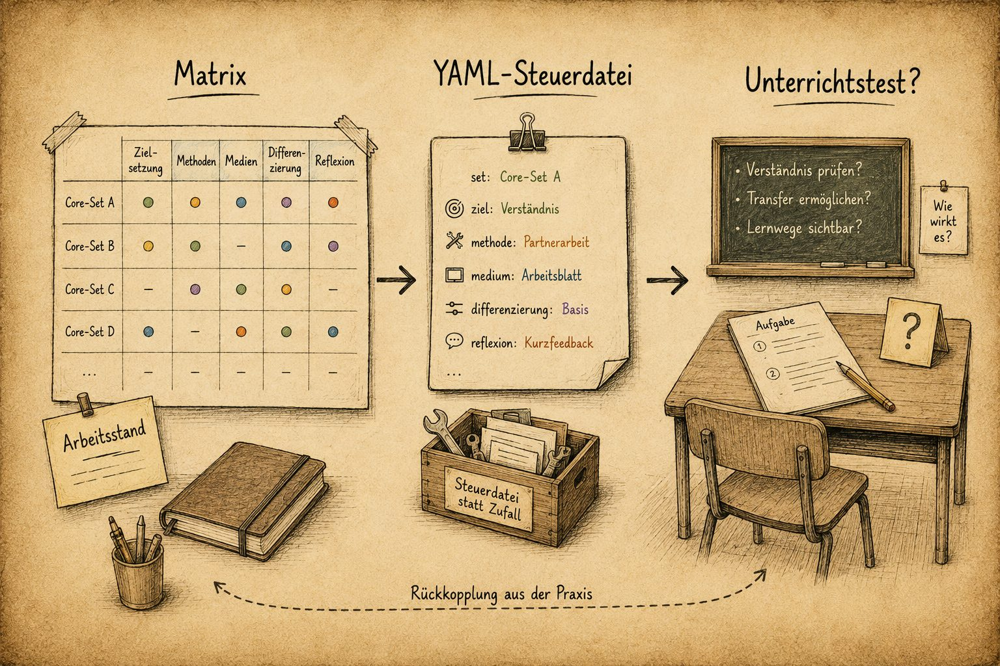
Und genau hier liegt der Haken:
Ich komme nicht dazu, weil sich eine andere Entwicklung dazwischenschiebt.